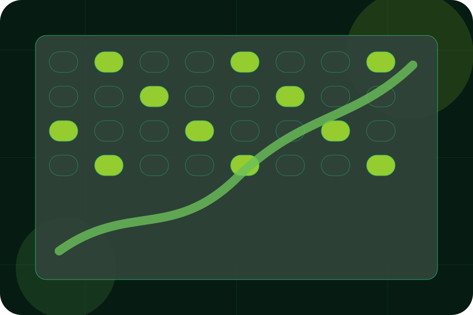

Services / 01
Services by Field
Services shaped for agriculture, farming & rural business decisions.
Services opens as a clear agriculture decision hub: what Field offers, who it helps, why it matters, and which route to take first.
The first screen combines positioning, proof, primary action, and fast internal navigation, so people can act immediately or compare the rest of the services route with context.
Agriculture scopeCompare optionsRequest advice
Deep-green grow room hero
Plan the season
Select the closest route and Field keeps the next step, proof, and follow-up expectation aligned with seasonal timing and trust.

Services / 02
Planning
Planning explains the practical scope, best-fit situations, and expected outcome so agriculture visitors can compare options without decoding jargon.
The section keeps the offer concrete: what is included, who it is best for, what decision it supports, and which linked route gives the deeper detail.
Explore ServicesWho should use planning and when it belongs in the services journey.
The practical benefit visitors should expect after choosing this route.
Where to compare details, pricing, support, or contact options before committing.
Services / 03
Supply
Supply explains the practical scope, best-fit situations, and expected outcome so agriculture visitors can compare options without decoding jargon.
The section keeps the offer concrete: what is included, who it is best for, what decision it supports, and which linked route gives the deeper detail.
Explore Services- 01
Best Fit
Who should use supply and when it belongs in the services journey.
- 02
What Changes
The practical benefit visitors should expect after choosing this route.
- 03
Deeper Route
Where to compare details, pricing, support, or contact options before committing.
Services / 04
Maintenance
Maintenance explains the practical scope, best-fit situations, and expected outcome so agriculture visitors can compare options without decoding jargon.
The section keeps the offer concrete: what is included, who it is best for, what decision it supports, and which linked route gives the deeper detail.
Explore ServicesField structures maintenance around best fit, what changes, and a clear next route so visitors can compare the block quickly before they plan a visit.
Plan VisitServices / 05
Advisory
Advisory explains the practical scope, best-fit situations, and expected outcome so agriculture visitors can compare options without decoding jargon.
The section keeps the offer concrete: what is included, who it is best for, what decision it supports, and which linked route gives the deeper detail.
Explore ServicesBest Fit
Who should use advisory and when it belongs in the services journey.
Services / 06
Seasonal
Seasonal explains the practical scope, best-fit situations, and expected outcome so agriculture visitors can compare options without decoding jargon.
The section keeps the offer concrete: what is included, who it is best for, what decision it supports, and which linked route gives the deeper detail.
Explore ServicesBest Fit
Who should use seasonal and when it belongs in the services journey.
What Changes
The practical benefit visitors should expect after choosing this route.
Deeper Route
Where to compare details, pricing, support, or contact options before committing.
Services / 07
Visits
Visits explains the practical scope, best-fit situations, and expected outcome so agriculture visitors can compare options without decoding jargon.
The section keeps the offer concrete: what is included, who it is best for, what decision it supports, and which linked route gives the deeper detail.
Explore ServicesWho should use visits and when it belongs in the services journey.
The practical benefit visitors should expect after choosing this route.
Where to compare details, pricing, support, or contact options before committing.
Services / 08
Benefits
Benefits defines the better state Field is built to create, with enough detail to make the promise believable.
A controlled-agriculture site with vertical growing surfaces, yield metrics, season planning, and visit routes. The section grounds that direction in concrete benefits, visible tradeoffs, and a next route visitors can use when the promise feels relevant.
Explore ServicesBetter State
Benefits defines what becomes clearer, easier, or safer when Field is the chosen route.
Practical Gain
The benefit is tied to seasonal timing and trust, not a vague quality claim.
Proof Route
Visitors get a linked path to compare the promise against services, standards, or examples.
Services / 09
Scope
Scope explains the practical scope, best-fit situations, and expected outcome so agriculture visitors can compare options without decoding jargon.
The section keeps the offer concrete: what is included, who it is best for, what decision it supports, and which linked route gives the deeper detail.
Explore ServicesBest Fit
Who should use scope and when it belongs in the services journey.
What Changes
The practical benefit visitors should expect after choosing this route.
Deeper Route
Where to compare details, pricing, support, or contact options before committing.
Services / 10
Plan Visit
Field closes the services route with a clear action, a quick reminder of the value, and a low-friction way to plan a visit.
Visitors who are ready can use the primary action. Visitors who are still comparing can scan the section links, proof, and support routes before they plan a visit.
Plan VisitThe final block keeps the choice simple: act now, compare one more proof route, or send enough detail for a focused response.
Plan Visitseasonal timing and trust
Plan Visit
A controlled-agriculture site with vertical growing surfaces, yield metrics, season planning, and visit routes. Services ends with a direct path to plan a visit, plus enough context for visitors who still need to compare.
Notes
Information is provided for planning and should be reviewed for the final client, location, and operating rules.